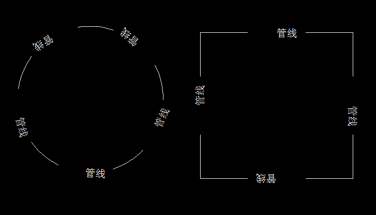
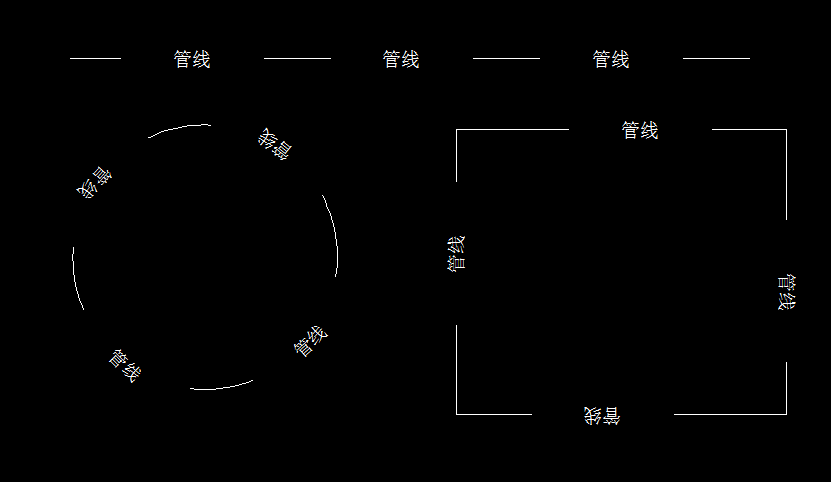

先看一下系统自带的线型文件acadiso.lin：
*HOT_WATER_SUPPLY,Hot water supply ---- HW ---- HW ---- HW ----
A,12.7,-5.08,["HW",STANDARD,S=2.54,U=0.0,X=-2.54,Y=-1.27],-5.08| * | 线型文件中，每种线型必须以（*）开头 | |
| HOT_WATER_SUPPLY | 线型名称 | |
| Hot water supply ---- HW ---- HW ---- HW ---- | 线型描述 | |
| A | 对齐方式，必须的，也是唯一的 | |
| 12.7 | 起始为12.7个单位长的实线 | |
| -5.08 | 接上为长5.08的空白 | 可以看出：正数为实线，虚线为空白 |
| [] | 内为图案定义 | 这里是文字图案 |
| “HW” | 文字内容 | |
| STANDARD | 文字样式，需要注意的是，如果文档中未发现文字样式，会发生错误（eKeyNotFound），建议设置成STANDARD |
因为STANDARD是每个CAD文档必须要有的文字样式，同样的，如果想更改系统自定义的带文字的线型样式，需要更改STANDARD |
| S=2.54 | 要用于文字样式的缩放比例与线型的比例相关。文字样式的高度需乘以缩放比例。如果高度为 0，则 S=值的值本身用作高度 | |
| U=0.0 | U = 值、R = 值或 A = 值。U= 指定正立或易于阅读的文字。R= 指定相对于直线的相对或相切旋转。A= 指定文字相对于原点的绝对旋转；即所有文字不论其相对于直线的位置如何，都将进行相同的旋转 | 旋转是围绕基线和实际大写高度之间的中点进行的 |
| X=-2.54 | 文字在线型的 X 轴方向上沿直线的移动。使用该字段控制文字与前面提笔或落笔笔划间的距离 | 该值不能按照 S=值定义的缩放比例进行缩放，但是它可以根据线型进行缩放 |
| Y=-1.27 | 文字在线型的 Y 轴方向垂直于该直线的移动。使用此字段控制文字相对于直线的垂直对齐。 | 该值不能按照 S=值定义的缩放比例进行缩放，但是它可以根据线型进行缩放。 |
| -5.08 | 以长5.08的空白结束 |
|
[CommandMethod("CTL")]
public void CreateTextLinetype()
{
Document doc = Application.DocumentManager.MdiActiveDocument;
Database db = doc.Database;
Editor ed = doc.Editor;
Transaction tr = db.TransactionManager.StartTransaction();
using (tr)
{
TextStyleTable tt = (TextStyleTable)tr.GetObject(db.TextStyleTableId, OpenMode.ForRead);
LinetypeTable lt = (LinetypeTable)tr.GetObject(db.LinetypeTableId, OpenMode.ForWrite);
LinetypeTableRecord ltr = new LinetypeTableRecord();
ltr.Name = "管线";
ltr.AsciiDescription = "管线线型 ---- 管线 ---- 管线 ---- 管线 ----";
ltr.PatternLength = 1.3;//所有实线+空白的长度总和
ltr.NumDashes = 3;//所有实线+空白的段落总和
//第一段
ltr.SetDashLengthAt(0, 0.5);
//第二段
ltr.SetDashLengthAt(1, -0.4);
ltr.SetShapeStyleAt(1, tt["STANDARD"]);
ltr.SetShapeNumberAt(1, 0);//图案在图形文件中的编号，由于这里是文字，可以省略该设置
ltr.SetShapeScaleAt(1, 0.1);
ltr.SetTextAt(1, "管线");
ltr.SetShapeRotationAt(1, 0);
ltr.SetShapeOffsetAt(1, new Vector2d(0, -0.05));//X轴不对，Y轴向下移动0.05个单位
//第三段
ltr.SetDashLengthAt(2, -0.4);
// 添加新线型到线型表
ObjectId ltId = lt.Add(ltr);
tr.AddNewlyCreatedDBObject(ltr, true);
tr.Commit();
}
}
需要注意的是，文字（管线）两侧的空白并不对称，这是因为文字（管线）或图形的长度实际是占用了下一个段落的长度，
这里就是占用了第三段空白0.4的长度一部分，所以该段空白长度实际小于0.4。
我们向来提倡对称美，那么应该怎么处理使文字两侧的空白看起来是对称的呢，思路是用包围圈计算出文字（管线）的单位长度，
然后第三段在0.4的基础上加上文字（管线）的长度即可。
改善后效果如下：
